Introduction
这门课程的主题是「实时高质量渲染」(real-time high quality rendering)，属于比较进阶的内容。下面分别解释主题中的三个关键词：
-
实时：
-
速度：通常要快于 30 FPS（帧每秒），在虚拟/增强现实领域的要求更高（>= 90 FPS）
- 交互式(interactive)：每秒只有几帧
-
互动性(interactivity)：每一帧都需要在线(on the fly)生成
-
-
高质量：
- 真实感(realism)：使渲染更加真实的高级方法
- 可靠性(dependability)：总是正确（精确/近似），对（无法控制的）失败（瑕疵(artifact)）零容忍
-
渲染：在三维场景（网格、光照等）中计算光是如何从光源发出，进入到人眼中，形成一幅图像
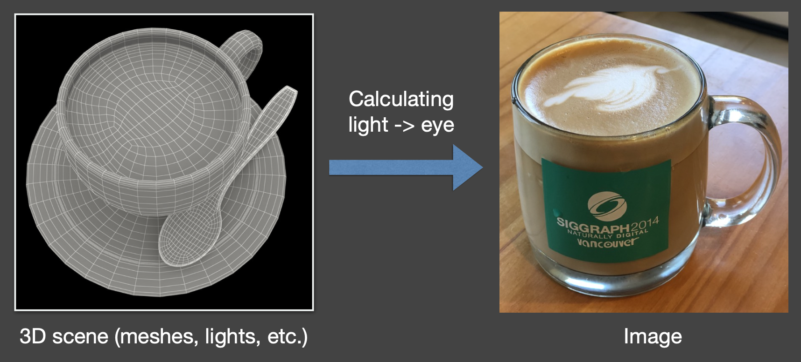
本课程主要涉及到以下四个关于实时渲染的大主题：
- 阴影(shadow)
- 全局光照(global illumination)（场景/图像空间，预计算）
- 基于物理的着色(physical-based shading)
- 实时光线追踪(real-time ray tracing)
在这些大主题中，我们又会详细探讨以下话题：
-
阴影(shadow)和环境映射(environment mapping)（环境光）
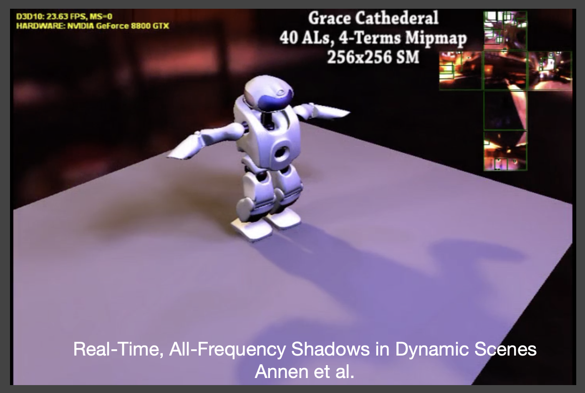
-
交互式全局光照技术(interactive global illumination techniques)

-
预计算辐射传输(precomputed radiance transfer)
- 球面谐波函数，需大量存储
- 下面是闫老师若干年前写的 demo（跑在远古的 GTX 780 上，那时候的硬件还不支持光线追踪加速...）

-
实时光线追踪

-
参与介质渲染(participating media rendering)、图像空间效果(image space effects)等
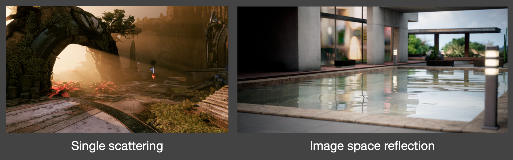
-
非真实感渲染(non-photorealistic rendering)
- 服从于艺术效果，具有非科学性
- 本课程不会深入探讨这一话题
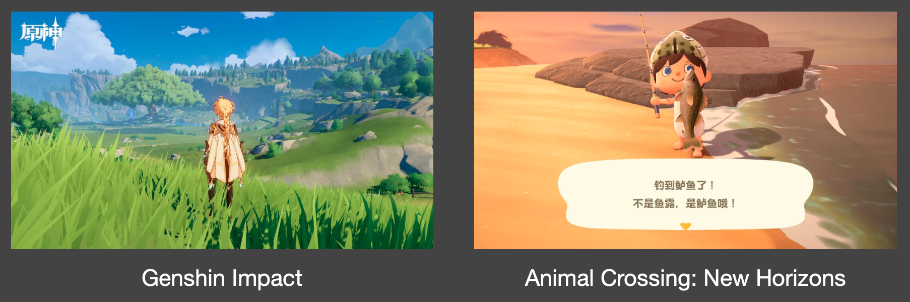
-
反走样(antialiasing)和超采样(supersampling)
- 代表技术：时间反走样、DLSS
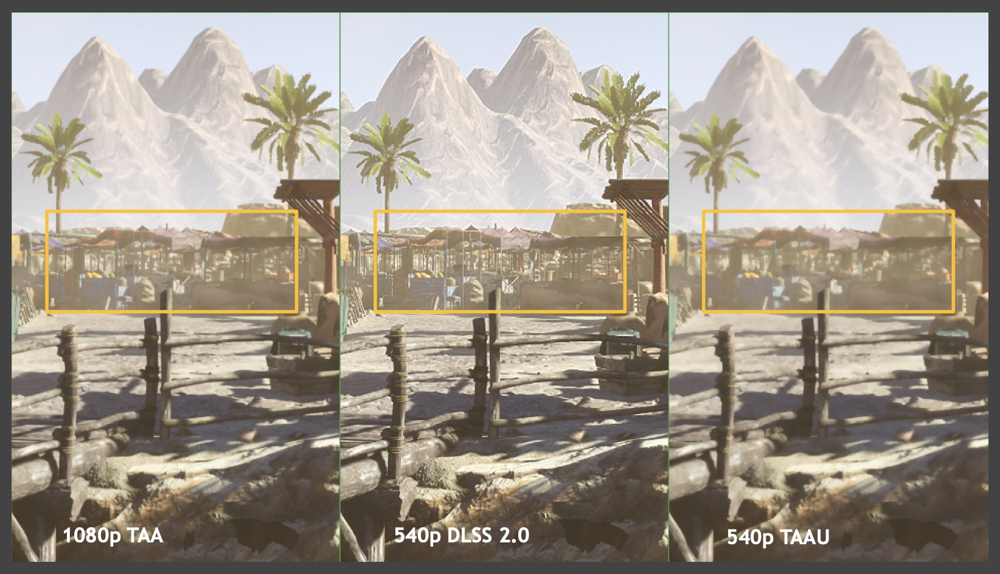
-
聊聊前沿技术

-
聊聊游戏
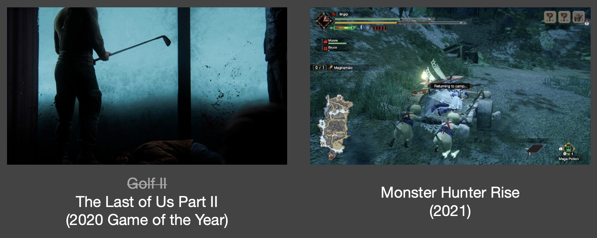
这门课不会讲什么
-
使用游戏引擎（比如 UE）进行 3D 建模或游戏开发
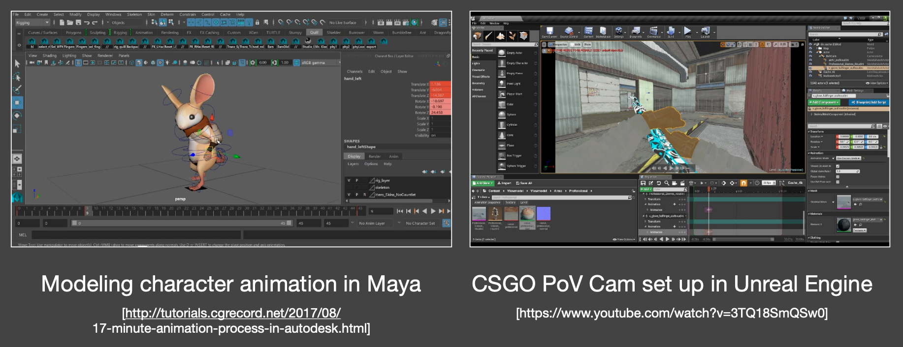
-
在电影/动画行业中用到的昂贵（但更准确）的光传输技术（离线渲染）
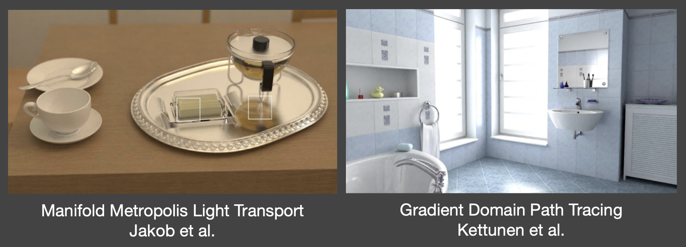
-
神经网络渲染(neural rendering)（无法做到「实时」和「高质量」）
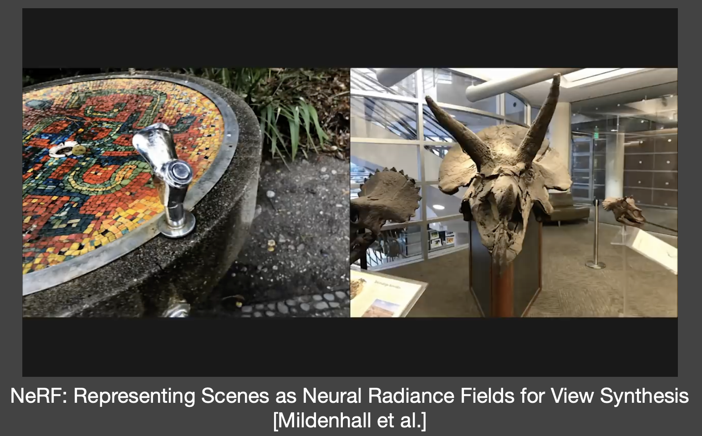
其实现在还有更吊的 3DGS 和 2DGS（之前做 CV 大作业的时候了解过）。
-
使用特定的图形学 API（比如 OpenGL）
- 场景/着色器优化
- 着色器逆向工程（
也违背道义） - 高性能渲染，比如 CUDA 编程
如何学习这门课程？
- 理解科学与技术的不同
- 科学 == 知识
- 技术 == 将科学转换为产品的工程技能
- 实时渲染 = 快速且近似的离线渲染 + 系统工程
- 一个事实：在实时渲染领域，业界（封闭、知识产权）总是领先于学界
- 熟能生巧
- 建议倍速观看视频（
我直接提取字幕阅读的，连视频都没看（doge））
为什么要学这门课程？
依旧：
这也是笔者为什么想从事相关行业的原因。
Motivation
如今，我们可通过计算机图形学生成逼真的(photorealistic)图像。
- 涉及到复杂的几何、光照、材质、阴影
- 计算机生成的电影/特效，使我们难以或无法区分什么是真实的，什么是渲染出来的
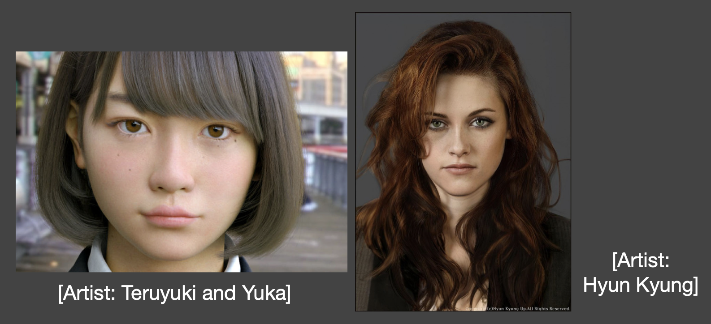
但是这些准确的算法（尤其是光线追踪）跑起来非常慢，所以它们被称为离线渲染方法。以《疯狂动物城》为例，影片中的 1 帧画面在一个 GPU 核心上需要花 10000h 时间渲染！
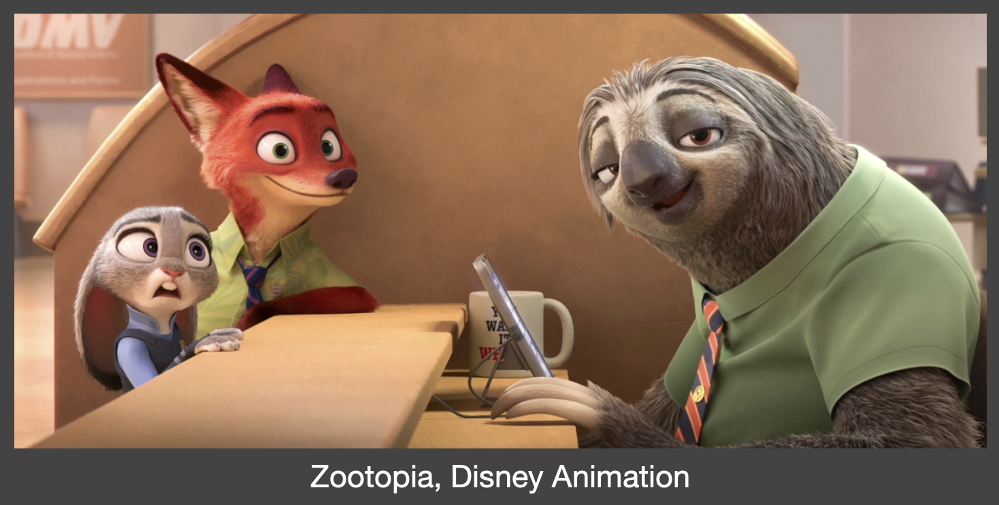
通过适当的近似，我们生成看似合理的(plausible)结果，但运行速度会快很多。比如右图的车看起来也比较不错的（不过截的图不太好）。
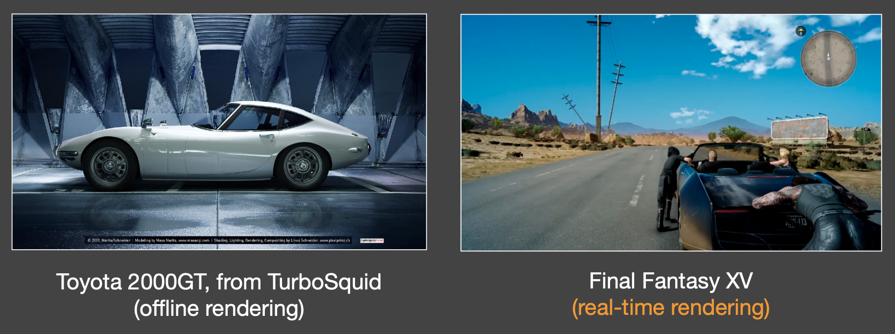
Evolution of Real-Time Rendering
实时渲染领域有着 悠久的 历史（可能比离线渲染还要久远）：
-
交互式 3D 图形管线，如 OpenGL 所示
- 从最早的 SGI 机器（Clark 82）开始至今
- 主要关注更多几何与纹理映射技术
- 通过部分调整来增强真实感（如阴影映射、累积缓冲区）
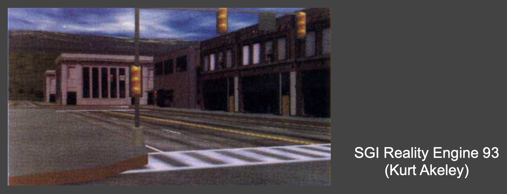
-
近三十年前：交互式 3D 几何体，带有简单的纹理映射和伪阴影（支持 OpenGL、DirectX）
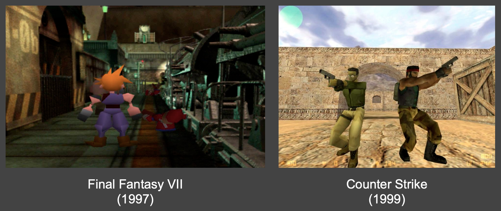
-
20-10 多年前
- 自可编程着色器问世（2000）以来有了很大的飞跃
- 复杂环境光照，真实材质（天鹅绒、缎面、涂料），软阴影
- 问题：下面两个游戏，一个太暗，一个太油
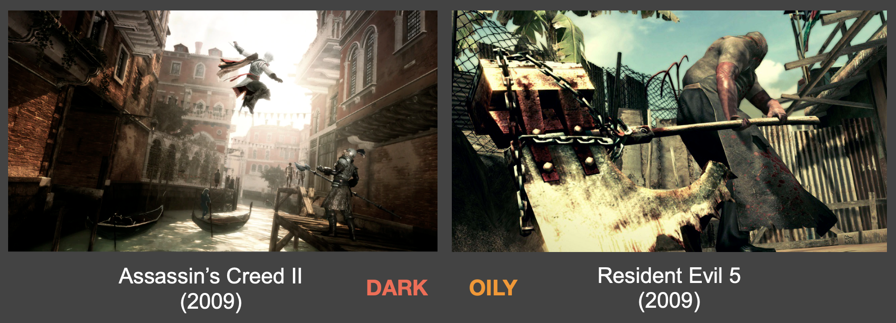
-
近十年
-
惊艳的图形
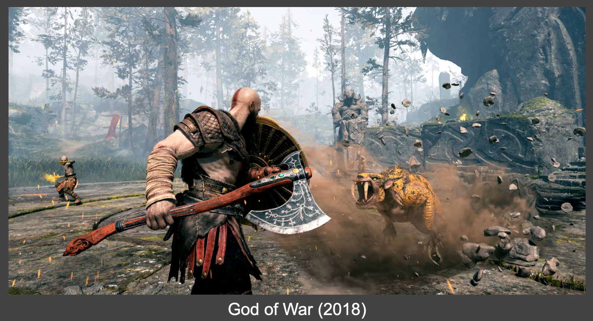
-
扩展到虚拟现实（VR）乃至电影领域
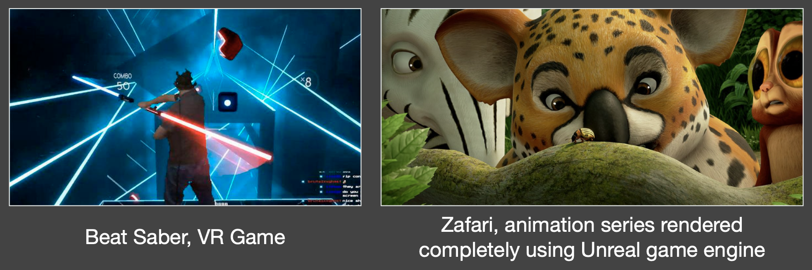
-
使用 UE4 制作的逼真森林

-
实时光线追踪 Demo（2018，NVIDIA）

-
-
未来
- 《黑客帝国》（Matrix，1999）
- 《头号玩家》（Ready Player One，2018）
Technological and Algorithmic Milestones
最后介绍一些 CG 领域发展史上的里程碑技术：
-
可编程图形硬件(programmable graphics hardware)（着色器）（二十多年前）
- 程序员可以自己编写顶点着色器和片元着色器了
- 现在还有计算着色器
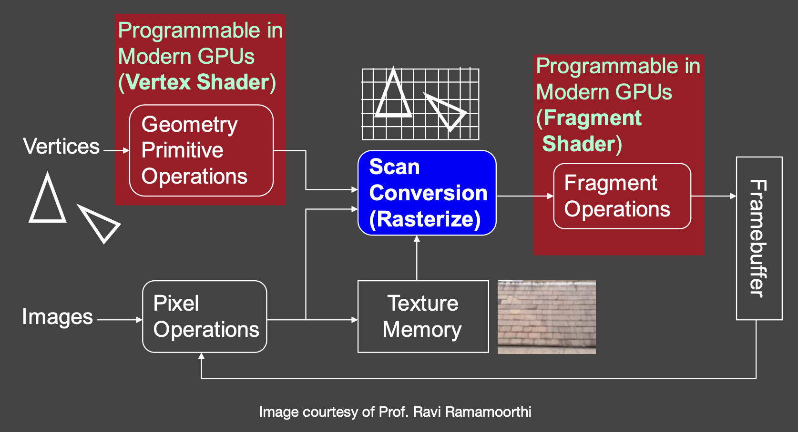
例子
现在看起来不咋地，但在当时属于跨时代的产物。
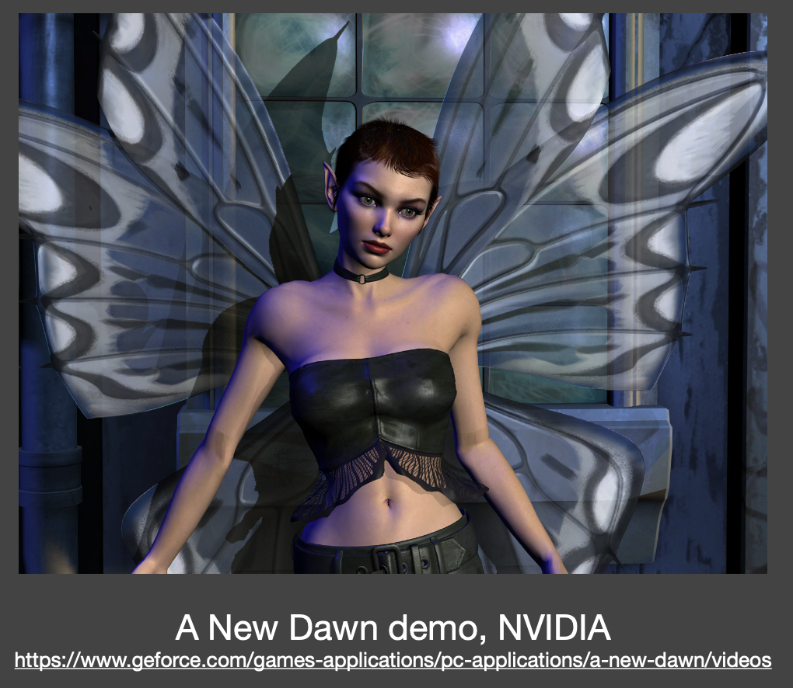
-
基于预计算的方法(precomputation-based methods)（二十年前）
- 复杂的视觉效果被（部分）预计算
- 最小化运行时的渲染成本（但以额外存储为代价）
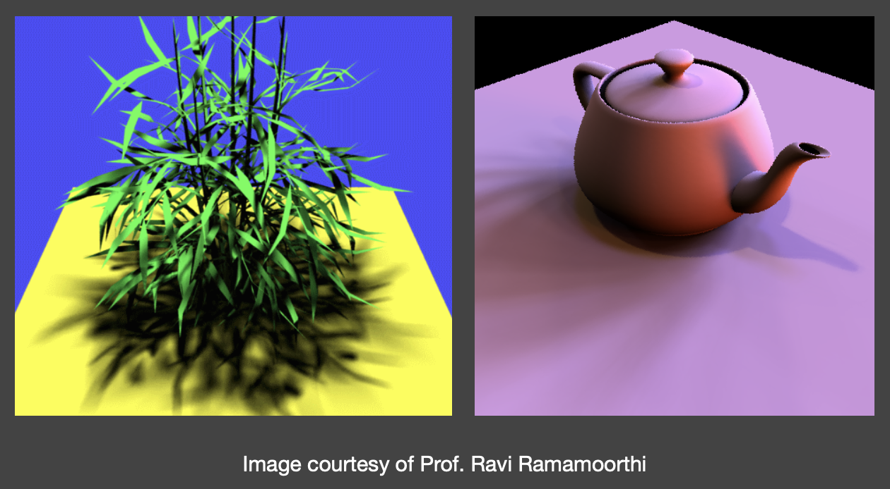
例子
09 年的论文，很难想象到时就已经有这么不错的渲染技术了（看左上角的帧率）。

-
重新照明(relighting)：固定几何与观察点，动态改变光照（作者是闫老师博士时候的老板，一位相当厉害的大牛！）
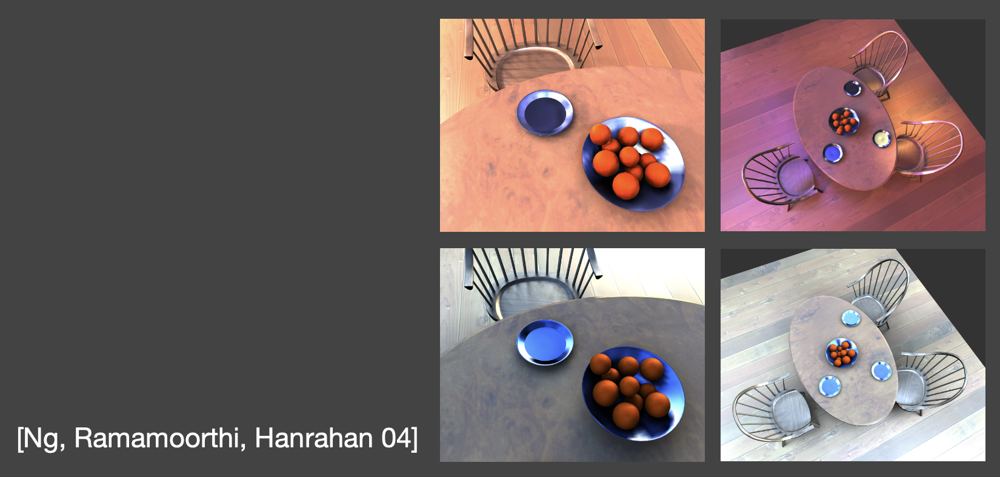
-
交互式光线追踪(interactive ray tracing)（十年前，CUDA + OptiX）
- 硬件发展使得 GPU 能够在低采样率下实现光线追踪（约每像素 1 个样本（SPP））
- 随后通过后处理进行去噪
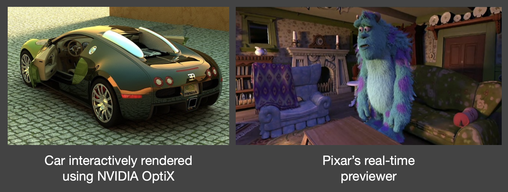
评论区